{{ g.nombre }}
{{ g.desc }}
{{ va.vaso }}
{{ va.etiqueta }}
{{ va.precio }}



Café de especialidad
La carta
Café de especialidad, dulces horneados a diario y desayunos de barrio. Precios en euros, IVA incluido.
{{ g.desc }}
Comunidad & inspiración
Reseñas
Reseñas de Google
★★★★★ Reseñas reales de clientes
{{ r.quote }}
Visítanos
Dirección
C. Realenga de San Luis,
10
Carretera de Cádiz, 29004 Málaga
Horario